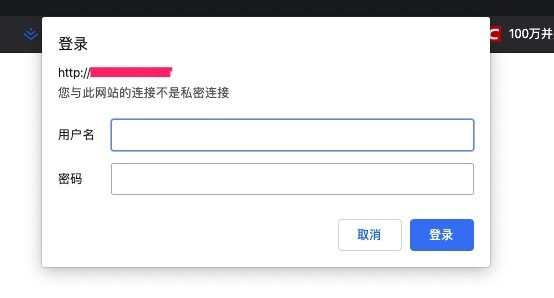

Nginx下为访问增加身份认证
有时候我们通过nginx搭建了一台文件服务器, 一般来讲是公开的, 但我们又希望该服务器不让他人看到, 有人可能会搭建一个登录系统, 但是太麻烦, 也没太大必要, 比较简单的做法是配置Basic Auth登录认证
纯后台的应用都可以加nginx basic auth提高安全性
htpasswd是Apache密码生成工具，Nginx支持auth_basic认证，因此我门可以将生成的密码用于Nginx中
Ubuntu：
sudo apt-get install apache2-utilsCentOS：
sudo yum -y install httpd-tools参数如下：
-c 创建passwdfile.如果passwdfile 已经存在,那么它会重新写入并删去原有内容.
-n 不更新passwordfile，直接显示密码
-m 使用MD5加密（默认）
-d 使用CRYPT加密（默认）
-p 使用普通文本格式的密码
-s 使用SHA加密
-b 命令行中一并输入用户名和密码而不是根据提示输入密码，可以看见明文，不需要交互
-D 删除指定的用户进入密码文件存储目录，如本次测试为/alidata/data/auth_basic
cd /alidata/data/auth_basic
#生成密码
htpasswd -c ./ip_passwdfile {username}
#执行上命令后会要求输入两次密码，./passwdfile 是在当前目录下创建密码文件passwdfile ，username即为需要设置的账号接下来在Nginx配置文件中（通常是server段内），加入如下两行，并重载Nginx（service nginx reload）即可生效。
server
{
listen 80 default_server reuseport;
server_name _;
index index.html index.htm index.php;
root /home/wwwroot/default;
auth_basic "请输入账号密码"; #这里是验证时的提示信息
auth_basic_user_file /alidata/data/auth_basic/ip_passwdfile;
include enable-php.conf;
location /nginx_status
{
stub_status on;
access_log off;
}
location ~ .*.(gif|jpg|jpeg|png|bmp|swf)$
{
expires 30d;
}
location ~ .*.(js|css)?$
{
expires 12h;
}
location ~ /.well-known {
allow all;
}
location ~ /.
{
deny all;
}
access_log /home/wwwlogs/access.log;
}再访问站点，提示需要输入用户名和密码才可以访问，此方法适合不宜公开的站点，或不想对其专门做账号登录系统的时候。这样可避免被弱口令扫描，无疑再上了一把锁。

对于这种有HTTP Basic Authentication协议验证的页面，如果使用curl抓取的话，可以加上账号密码进行请求：
curl -u username:password URL如果用wget下载,可以用：
wget --http-user= --http-passwd=passwd URL